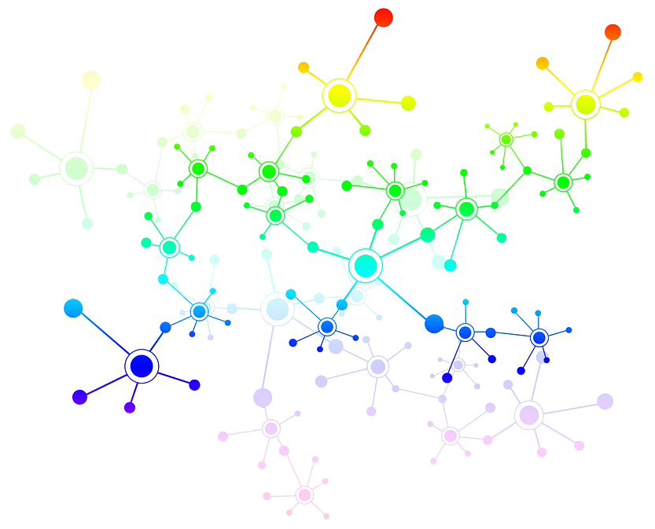

I'm a postdoctoral fellow in the Department of Philosophy at The University of Hong Kong and will take up an Assistant Lecturer position in the department this summer. Before coming to HKU, I held research positions at The Alan Turing Institute, Erasmus University Rotterdam, Jagiellonian University, and the University of Paris. I received a PhD from the Munich Center for Mathematical Philosophy at the Ludwig Maximilian University of Munich.
My research interests are in the areas of AI, decision theory, epistemology, ethics, and philosophy of cognitive science.